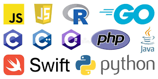

07.05.2024
07.05.2024
Основним завданням юридичної служби є організація правової роботи, спрямованої на правильне застосування, неухильне дотримання та запобігання невиконанню вимог законодавства, інших нормативних актів Університетом, його керівництвом та працівниками під час виконання покладених на них завданнь і функціональних обов'язків, а також представлення інтересів Університету в судах.
11.04.2024
Google, Гарвард та інші пропонують БЕЗКОШТОВНІ курси ШІ (платити не потрібно) Ось 8 БЕЗКОШТОВНИХ курсів для оволодіння штучним інтелектом у 2024 році:
1. Курси Google AI Google пропонує 5 різних курсів для вивчення генеративного ШІ з нуля. Почніть зі вступу до штучного інтелекту й завершіть його твердим розумінням штучного інтелекту в цілому.
2. Курс Microsoft AI Microsoft пропонує курс штучного інтелекту, який охоплює основи та багато іншого. Почніть зі вступу та продовжіть вивчення нейронних мереж і глибокого навчання.
3. Введення в ШІ з Python Гарвардський університет пропонує повний 7-тижневий курс для вивчення концепцій і алгоритмів ШІ. Почніть із технологій штучного інтелекту та закінчіть знаннями принципів штучного інтелекту та бібліотек машинного навчання